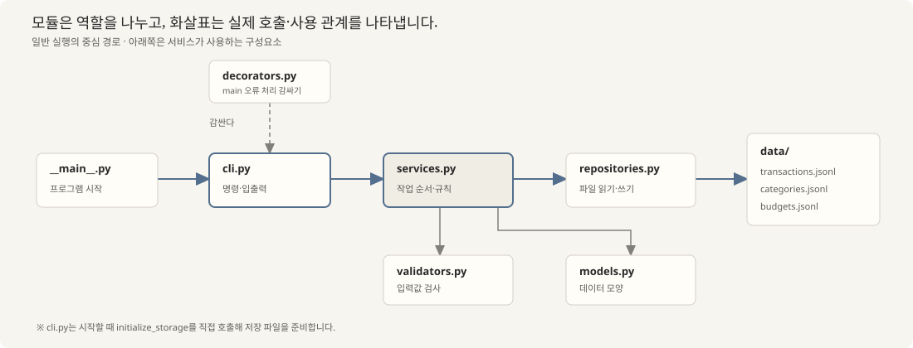
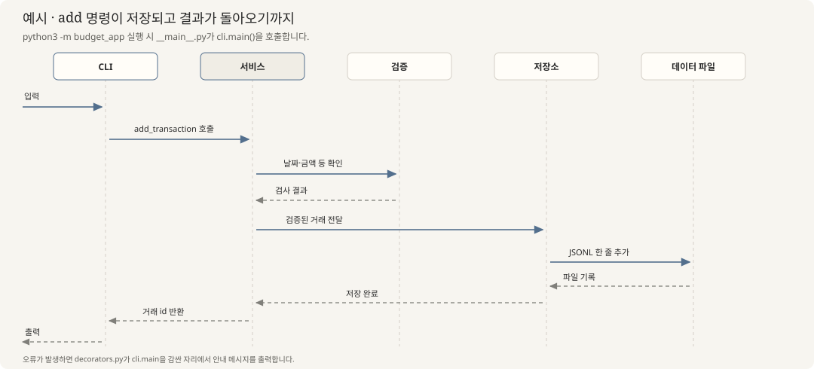

B2-1 · CODE REVIEW GUIDE
B2-1 평가 · 복습
이 페이지는 용돈 기입장을 만드는 방법을 새로 지시하는 대신, 완성된 B2-1 프로젝트가 어떻게 연결되는지 실제 코드로 살펴봅니다.
터미널 명령이 CLI와 서비스, 저장소를 거쳐 JSONL·CSV 파일에 닿는 과정에서 각 모듈이 맡은 일을 확인합니다.
이어서 제너레이터, 데코레이터, 타입 힌트가 이 코드에서 어떻게 쓰였는지 평가 항목과 함께 복습합니다.
01 · FILES & ROLES
프로젝트 전체 구조
사용자의 명령이 처리되고 파일에 저장되는 연결 관계를 한눈에 살펴봅니다.

평가·실습 자료와 복습 페이지는 evaluation/, 미션 원본은 source/, 사용 안내는 README.md에 있습니다.
파일 목록과 각 모듈의 역할 자세히 보기
실제 주요 파일
- B2-1/
- budget_app/실행 코드
- __main__.py시작점
- cli.py명령·입출력
- services.py업무 처리
- validators.py값 검사
- models.py데이터 모양
- repositories.py파일 읽기·쓰기
- decorators.py공통 오류 처리
- __init__.py패키지 표시
- data/실행 후에도 남는 값
- transactions.jsonl
- categories.jsonl
- budgets.jsonl
- evaluation/평가·실습 자료와 이 페이지
- source/미션 원본
- README.md사용 방법
- budget_app/실행 코드
초보자를 위한 역할 구분
- 접수 창구
cli.py - 명령을 알아듣고 필요한 값을 받으며 결과를 보여줍니다.
- 작업 담당
services.py - 거래를 추가할지, 무엇을 계산하고 저장할지 결정합니다.
- 규칙 확인
validators.py - 날짜·금액 같은 값이 허용되는지 검사합니다.
- 양식
models.py - 거래·예산·월별 결과가 어떤 값으로 이루어지는지 정의합니다.
- 보관 담당
repositories.py - 파일을 열고 거래·카테고리·예산을 읽거나 씁니다.
- 공통 안내
decorators.py - 처리 대상 오류를 사람이 읽기 쉬운 메시지로 바꿉니다.
02 · FROM INPUT TO RESULT
프로그램 전체 흐름
add 명령을 예로 들어 입력이 저장되고 결과가 돌아오는 길을 따라갑니다.

03 · LEARN WITH THE RUBRIC
평가항목
평가 문항 원문과 최종 코드를 함께 보며, “무엇을 하는가”부터 “왜 이 문항의 근거인가”까지 읽습니다.
1 / 16항목 1 · 기능
평가 문항 원문은 각 카드에 표시 · 검토 상태·근거: evaluation_review.md · 코드: 현재 budget_app/ 파일에서 발췌